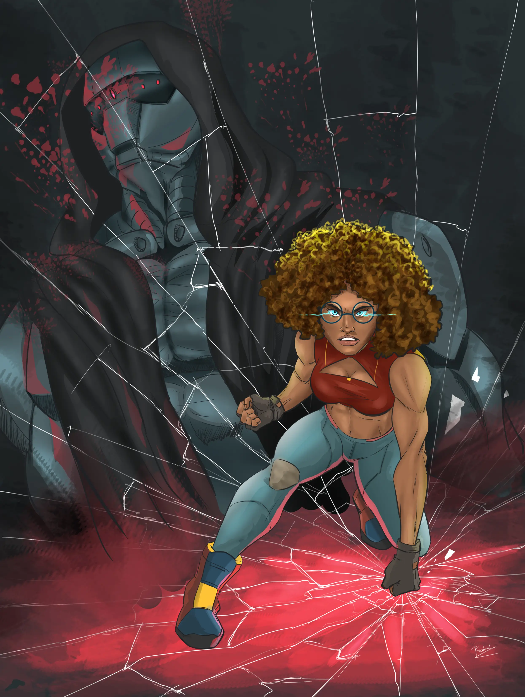
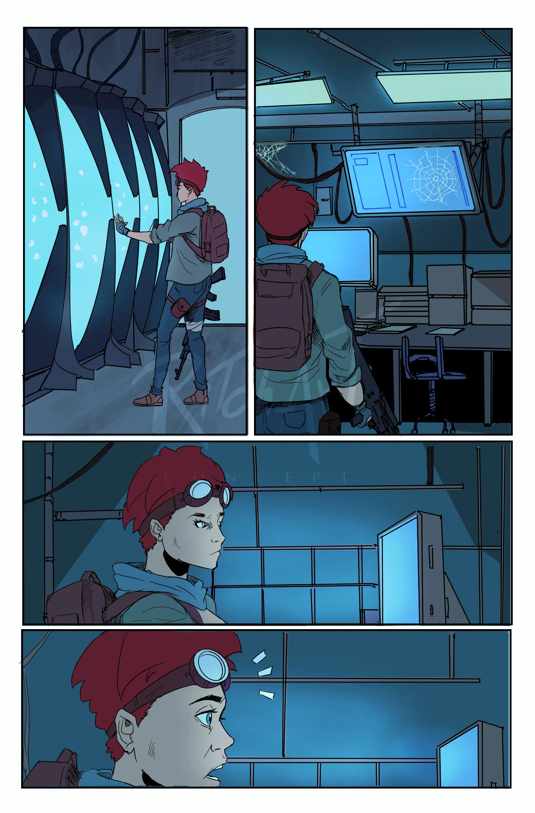
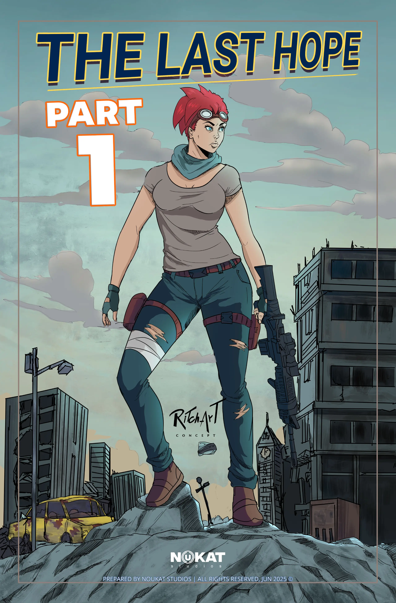
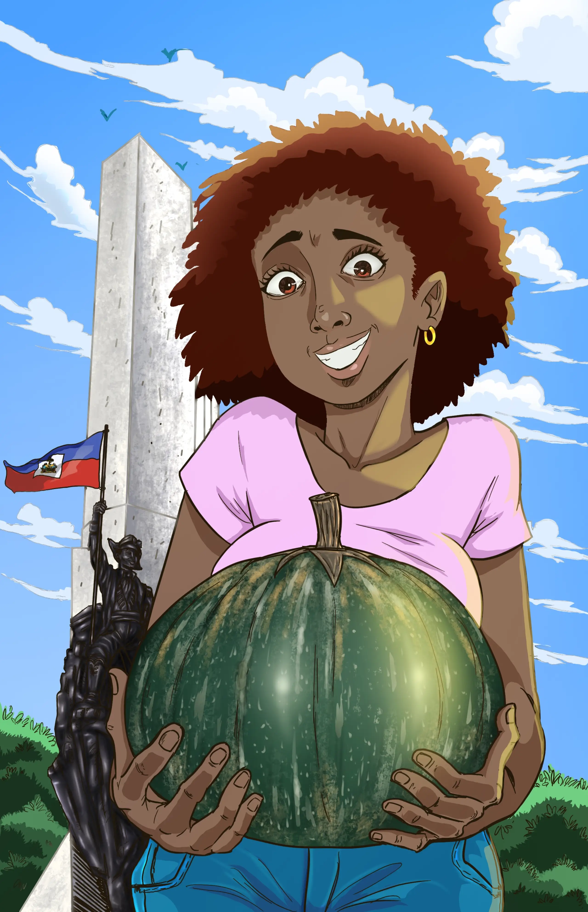
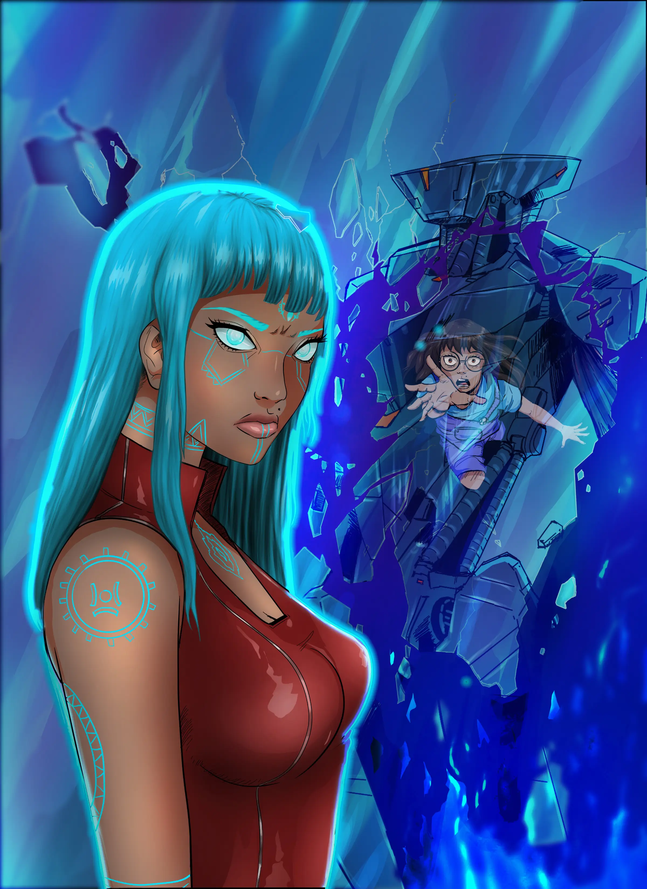
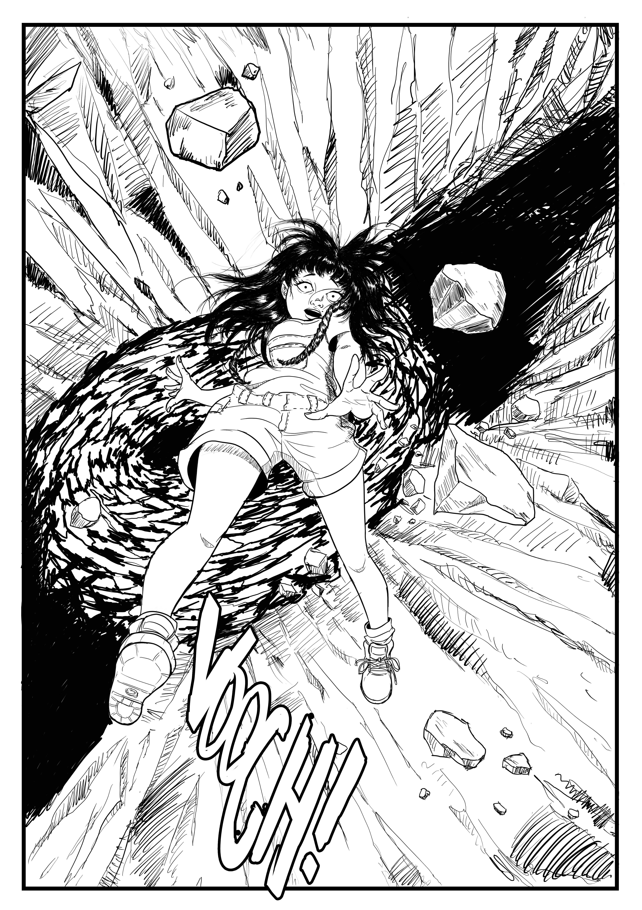
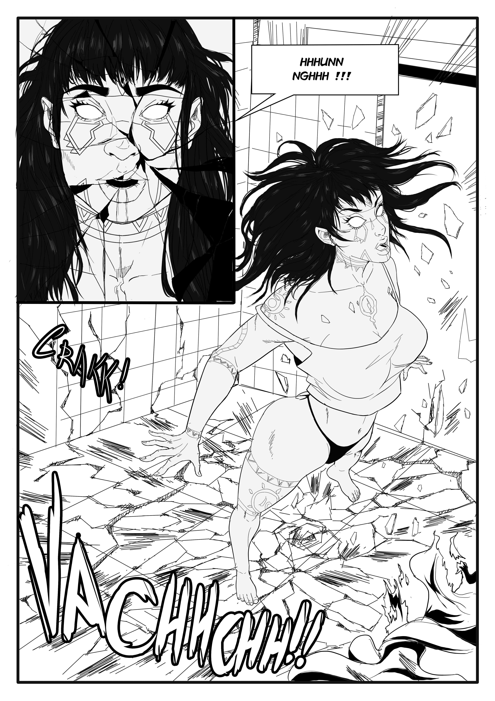
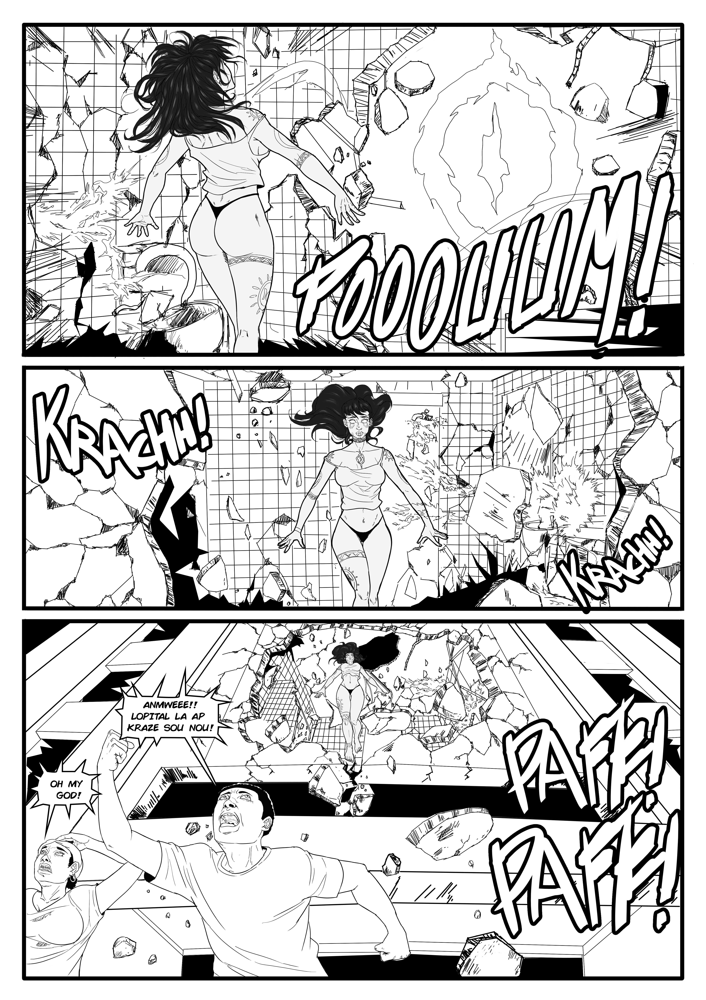
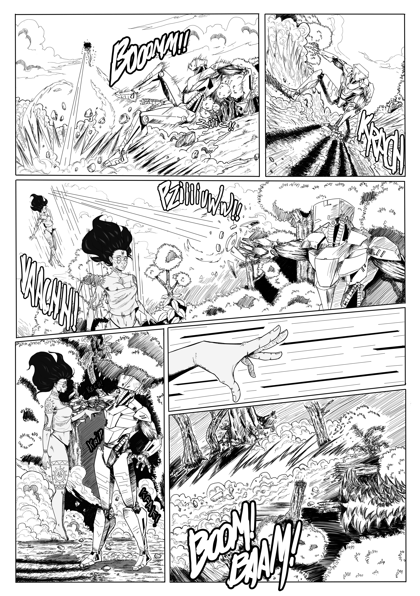

Travaux












Mon parcour
Je m'appelle Richard Fritzner, artiste polyvalent originaire d'Haïti, spécialisé dans la bande dessinée et l'illustration. Fort de 10 ans d'expérience professionnelle, j'ai su me démarquer dans l'industrie artistique grâce à ma créativité et mon expertise technique, en combinant illustration, graphisme, animation 2D et, plus récemment, programmation.
Mon parcours artistique a débuté en 2016, lorsque j'ai rejoint une maison d'édition en tant qu'illustrateur et graphiste. Cette expérience m'a permis d'explorer différents styles et techniques artistiques tout en contribuant à la création d'œuvres originales pour divers projets éditoriaux. Elle a été déterminante pour affiner mon sens du détail et ma capacité à raconter des histoires à travers l'art visuel. Au fil des années, j'ai élargi mon champ d'expertise en explorant la peinture numérique, un domaine dans lequel j'excelle particulièrement. Mon utilisation habile des outils numériques me permet de créer des œuvres dynamiques et captivantes, tout en conservant un lien avec les techniques traditionnelles qui imprègnent mon style unique. En tant qu'artiste freelance, j'ai eu l'opportunité de travailler sur une multitude de projets variés, allant de la conception de personnages pour des bandes dessinées à la création d'illustrations pour des campagnes publicitaires.
Projets marquants :
Gary Victor
— Réalisation des couvertures et mises en page de plusieurs de ses livres, dont Eud, la princesse aux cheveux magiques,
Taxi Moto, et Un homme dangereux.
Charles Exavier
— Collaboration sur sa bande dessinée Nayou, ainsi que sur divers ouvrages pédagogiques.
Video d'animation Roi Henri
— Participation, au sein d'une équipe, à la production d'une vidéo d'animation 2D.
UNICEF
— Actuellement consultant en charge de la production de trois vidéos d'animation 2D à caractère humanitaire.
le développement :
Animé par le désir de créer mes propres jeux vidéo et applications,
j'ai entamé en 2025 une formation en développement full-stack à freeCodeCamp.
Cette démarche s'inscrit dans la continuité naturelle de mon parcours créatif :
allier ma sensibilité artistique à une maîtrise technique du code pour concevoir,
à terme, ma propre plateforme de jeux et d'applications.








